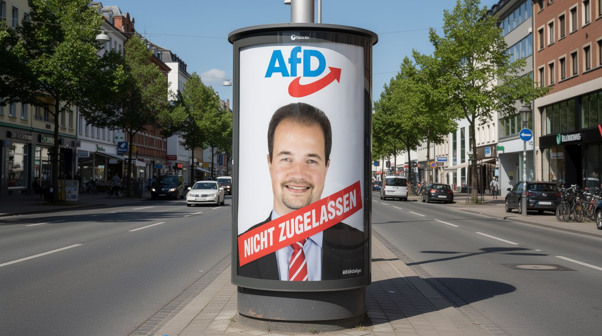

Gewählt, aber nicht wählbar

Gestern rügte die UN den deutschen Verfassungsschutz, weil sein Begriff von „Extremismus“ keine klare Grenze kennt. Heute zeigt Friesland, wozu so ein Begriff taugt.
Der Kreiswahlausschuss des niedersächsischen Landkreises Friesland hat den AfD-Bundestagsabgeordneten Martin Sichert nicht zur Landratswahl am 13. September zugelassen. Fünf von sechs Mitgliedern stimmten dagegen. Der Grund: Zweifel an seiner Verfassungstreue.
Ein Landrat ist ein Wahlbeamter, für Beamte gilt die Pflicht zur Verfassungstreue. So weit die Regel. Nur geprüft hat sie kein Gericht, sondern ein sechsköpfiger Ausschuss, auf Empfehlung der Kommunalaufsicht des Innenministeriums. Die Exekutive schlägt vor, ein Gremium entscheidet, wer auf den Stimmzettel darf.
Die Zweifel stützen sich nicht auf eine Tat Sicherts, sondern auf die Einstufung des niedersächsischen AfD-Landesverbands als gesichert rechtsextrem. Aus der Partei wird der Einzelne. Sichert verweist auf fünfzehn Jahre im öffentlichen Dienst, verpflichtet auf ebendiese Verfassung.
Die Wähler haben ihn längst geprüft und in den Bundestag geschickt. Fürs Landratsamt reicht dasselbe Mandat nicht. Es ist dieselbe Bewegung, die man seit Monaten kennt: Verbotsverfahren prüfen, Wahlrecht entziehen, Fördergeld streichen, jetzt Kandidaturen kippen. Alles wird versucht. Nur nicht bessere Politik.
Genau davor warnte die UN. Ein Begriff ohne scharfe Grenze wird zum Werkzeug. Wo „Extremismus“ alles heißen kann, kann „Verfassungstreue“ jedem fehlen, den man nicht auf dem Zettel haben will.
Und es wirkt, nur andersherum. Wen man an der Urne nicht schlägt, hält man von ihr fern. Bessere Wahlwerbung als einen solchen Beschluss bekommt die AfD nicht geschenkt. Der Ausschuss von Friesland hat ihr an einem Nachmittag mehr genützt als jedes Plakat.
Mehr dazu: Ein Drittel, das nicht sein darf.